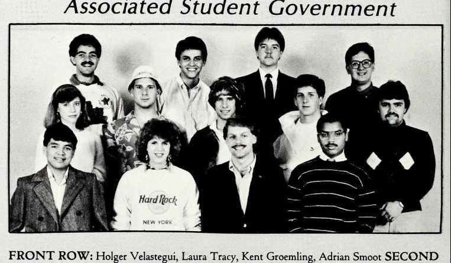

Two-year plate. A 1987 Herald piece reports a candidate shortage and mentions a Tim Todd race. Confirmed from inside the term by his own signed Herald column of 11 September 1986 explaining what ASG was and what it was for.
Todd reached the April 1986 runoff against Greg Elder after Mitchell McKinney's withdrawal left the presidential field open. The Herald reported the two-man race on 3 April, with the general election the following week.
Days after an election week the Herald described as marred by pranks and accusations, the paper identified Todd as the new ASG president in a sharply critical opinion piece headlined that he lacked knowledge of his own issues. Todd answered in print the following issue, criticizing the paper's reporting.
His first fall opened with an approved budget of $12,100, a plan to reach students by phone for their ideas and needs, and an ASG retreat featuring university president Kern Alexander.
Todd's first year leading Associated Student Government opened with ordinary organisational business. The Herald of 11 September 1986 reported that ASG approved a $12,100 budget, planned to telephone students to collect their ideas and needs, and scheduled a retreat that was to feature Kern Alexander.
By the end of the spring term the body was still working through routine legislation, tabling a phone bill after an amendment was raised, while a student government conference was set for that weekend. The same issue of 26 March 1987 covered the election for the following year, in which Todd stood again and Bill Fogle said he had entered the presidential race to help Todd rather than to win it.
Read the attendance policy to Congress at the first meeting of the year and kept the standing list of vacant seats, which in September 1986 stood at the Business, Ogden and Education college alternates and an on-campus representative. He signed the minutes as John C. Schocke.
Set proposed goals for each of the standing committees at the first meeting of the year, and took charge of the student discount card, telling Congress it was being produced strictly by ASG and not by Key Line Guide.
Distributed the new ASG brochures at the opening meeting of 2 September 1986 and announced the Weekend in the Woods leadership retreat at Camp Decker for 12 to 14 September 1986. He also chaired the Public Relations committee.
Elected Sergeant-at-Arms on 2 September 1986 from a field of four nominations, and appointed to the Judicial Council the following week. The minutes spell the surname both Austin and Austion.
Named chair when Congress confirmed the whole 1986-87 Judicial Council on 9 September 1986, the appointment having been held over from the first meeting of the year.
Appointed chair on 2 September 1986 and encouraged freshmen to take part in that autumn's elections. In the previous year he had written the legislation asking for a scholarship for Bowling Green's sister city, Santo Domingo de los Colorados.
Appointed chair of Legislative Research on 2 September 1986 and also sat on the Judicial Council that year. He was Administrative Vice-President the following year.
The 12 things student government staged or ran for the campus this year, drawn from the chronology below. Every one of them also appears on the programmes page, which runs the whole sixty years together.
Twenty years of amendments consolidated into one document
The constitution of the WKU Associated Students with amendments - the only surviving snapshot of how the 1966 framework had been patched over two decades. A Judicial Council roster for 1986-87 survives alongside it.
The WKU Board of Regents included a resolution honoring outgoing ASG president Mitchell McKinney, alongside honors for Georgia Bates and outgoing WKU president John Minton, at its August meeting - held the same day Kern Alexander was named the university's new president.
Associated Student Government took production of the wallet-sized student discount card in house after the company contracted the previous year delayed distribution. The printer, John Bewley, had been indicted by a Warren County grand jury for theft of service over $100 for failing to pay ASG the $500 it was owed for distributing the cards, then paid and had the case dismissed. Administrative vice president Lori Scott said about 20 merchants had already bought advertising at $100 each and she hoped for 30 to 40, with the cards out by the first week of October.
$100 per merchant advertisement, about 20 sold; a $500 debt recovered from the previous printer
Associated Student Government announced that it would reach out to students by telephone to hear their ideas and needs. The plan was reported in the same 11 September 1986 issue that covered the year's budget.
A $12,100 budget, a telephone outreach and a retreat with the university president
ASG approved an operating budget of $12,100. It also planned a telephone outreach effort to hear students' ideas and needs, and announced a retreat featuring university president Kern Alexander. The Herald carried all three items on 11 September 1986, in the second week of the fall semester.
Alphabet Day appears three times in the surviving 1986-87 minutes: on 23 September 1986 with elections, the retreat and committee appointments, on 24 February 1987 with the faculty reception and the high school leadership conference, and on 17 March 1987 with the spring conference and the lecture series. The minutes name it without describing it.
ASG president shot in the members' assassination game
ASG members spent the autumn of 1986 playing an assassination game with squirt guns, sponsored by the congress's public relations committee. President Tim Todd was shot at about 8 p.m. on Thursday 2 October in his State Street apartment, wearing only a bathrobe. Kathryn Michelsen killed three other congress members the same night, including a sleeping Holger Velastegui, and three more on the Sunday, two of them in front of their girlfriends; she led the field until Gamaliel freshman Janet Dyer shot her between the eyes near the university center on the night of 8 October.
A joint hot dog supper with the University Center Board
On 3 October 1986 Tim Harper and David Rodriguez sent a joint invitation to the members of student government and of the University Center Board to a hot dog supper. The invitation survives in SGA's own records; the archive's description names the two men but gives them no offices.
International Day held three weeks of the congress's attention
International Day was ASG business through the autumn of 1986. The minutes of 14 October record it alongside events and discount cards, those of 21 October record it alongside elections and legislation, and those of 28 October record it with the Legislative Research Committee and the Student Action Committee. The minutes do not record how the day itself went.
ASG asked for the mandatory athletic fee to be abolished
Resolution 86-8-F, dated 14 October 1986, proposed ending the student athletic fee. The same meeting took Resolution 86-9-F, asking Campus Police to issue a warning rather than a ticket for a first offence.
Athletic fee bill defeated; a top ASG race decided by eight votes
Associated Student Government defeated a bill that would have made the athletic fee optional. The same issue reported that a top ASG race had been decided by only eight votes.
The minutes of 11 November 1986 record the installation of Kern Alexander as Western's president among the congress's business, with fall enrolment, the spring conference and the Western-Notre Dame game. Alexander had been named president that August; he resigned in the spring of 1988.
Todd went to Wisconsin to look at a campus hangout
The minutes of 18 November 1986 record ASG president Tim Todd's trip to Wisconsin about a campus hangout, alongside the Western-Notre Dame game and legislation. The hangout in Downing University Center was one of the two projects the 1987 Talisman named as ASG's main work that year, and the minutes of 24 March 1987 return to it.
Two academic resolutions on one night: the W and a reading day
On 18 November 1986 the congress took Resolution 86-14-F, asking that the W for a withdrawn course be removed from student transcripts, and Resolution 86-15-F, asking for a reading day before final exams. The study day request was still being made by successive congresses into the 1990s.
A lecture series and a Young Democrats versus Young Republicans debate
The minutes of 25 November 1986 record a lecture series and a debate between the Young Democrats and the Young Republicans among the congress's business, together with legislation and a Kentucky student government association meeting at Western. The lecture series returns in the minutes of 17 March 1987, and debates again in those of 24 March 1987. What was scheduled is recorded; no account of either event survives in the minutes.
The Herald of 11 December 1986 reported that a single member of Associated Student Government, Bill Schilling, wrote most of the bills that came before the congress. Schilling was the author of the recorded campus events phone line proposal tabled that February, and he was at the centre of the impeachment attempt the following autumn.
Weekend in the Woods, the fourth annual ASG leadership camp
ASG sponsored the fourth annual Weekend in the Woods, a leadership conference at Camp Decker about 13 miles from Bowling Green, and 45 students attended against accommodation for 75 at $30 a head covering meals and lodging. Members had begun lining up speakers and camp reservations the previous March; seminars covered leadership, goal setting, generating ideas and listening, and for the first time student leaders spoke alongside faculty. State senator-elect Nick Kafoglis lectured, and when President Kern Alexander could not make the closing session he invited every Weekender to breakfast at his home a week later. The yearbook does not date the weekend.
$10,000 for campus lights and a plan for a student hangout
The 1987 Talisman recorded ASG's two main projects of the year as more campus lighting and a student hangout in Downing University Center, both traced to President Kern Alexander's concern about student retention raised at a September breakfast with ASG members. ASG persuaded the administration to put up $10,000 for new lights. To stop students going home at weekends, members formed committees to arrange the music and the lighting for a place in the university center where students could dance without leaving campus.
$10,000 from the administration for new campus lighting
A recorded campus events phone line is put on hold
A proposal to start a telephone service playing recorded messages about campus events was tabled at the 3 February meeting until more research could be done. The equipment would have cost $500, with $60 for installation and a $17 monthly service charge, and author Bill Schilling said promotion would add $200 more. Public Information director Fred Hensley had not been consulted before the bill was introduced, and the sports information office already ran a line of its own.
$500 equipment, $60 installation, $17 a month, plus $200 promotion
A faculty reception breakfast and the book exchange
The minutes of 17 February 1987 record a faculty reception breakfast and the book exchange among the congress's business, with legislation and the committee meeting schedule. The faculty reception returns in the minutes of 24 February 1987 alongside a high school leadership conference.
A Martin Luther King bill passed the congress with members split by the argument, a year after ASG had rejected dismissing classes for the holiday. The same issue reported that Tim Todd and Greg Elder would battle again for the presidency.
ASG prepared to host the second statewide student government conference
The Herald reported that ASG would host the second annual statewide student government conference from Friday 27 March through Sunday, at the American Plaza on Scottsville Road. President Tim Todd expected about 50 student leaders, against about 65 at the first conference, which ASG had also hosted, and put the cost of hosting at $400 to $500. Registration was $18 and the conference was open to all students. Saturday seminars covered leadership, communication and financial aid, with the Council on Higher Education flying in a financial aid consultant from Washington and sending its director, Gary S. Cox.
Lieutenant Governor Steve Beshear's visit comes before the congress
The minutes of 31 March 1987 record a visit by Lieutenant Governor Steve Beshear alongside the state student government meeting, other events and resolutions. This is a note of what was arranged; the minutes do not report the visit itself.
The Herald reported that ASG attendance fell off once campaign speeches had been heard. An accompanying piece warned voters that talk was cheap in the presidential race.
A constitutional amendment was defeated because too few members turned up to vote on it. The failure came in the same week as the presidential election.
The Herald calls the race for Elder; the index calls it no contest
On election day the Herald endorsed challenger Greg Elder as the better choice to lead ASG, ran a letter calling the organization impotent, and headlined the race itself as no contest. The indexed issues that survive do not record the published result; the SGA plaque carries Todd through 1988 on a two-year plate.
Leigh Eagleston reported that Tim Todd beat Greg Elder in a re-run of the Associated Student Government presidential election, two days after the Herald had indexed the first contest as no contest and endorsed Elder. The same issue carried a letter from Shannon Ragland asking that ASG's name be cleared. The archive previously recorded that the published result of the 1987 race did not survive; this settles it.
The Herald's verdict on the year: conflicts and walkouts
Leigh Eagleston's piece in the Herald of 23 April 1987 summed up the ASG year under the headline that conflicts and walkouts had finished it off. It ran in the last issues of the spring term, after the amendment that died for want of members and the disputed presidential race.
Doug Gott wrote a piece headlined that Associated Student Government was paralyzed, in the last week of the spring term. It followed a fortnight of election re-run, walkouts and letters, and the surviving index preserves only the headline.
One of two Associated Student Government groups photographed for the 1987 Talisman, which names them without giving offices: treasurer Barbara Rush, with Carol Sue Norcia, Hollie Hale, Kimberly Summers, Karen Lassiter, Janet Dryer, Terri Wakefield, Michelle Conner, Kristina Hayden, Lynn Groemling, Lynn Ritter, Donald Herron, Martha Wilson, Caroline Miller and Laura Dibert.1987 Talisman, p. 114

The second Associated Student Government group photographed for the same volume, holding most of that year's officers: president Tim Todd, public relations vice president Daniel Rodriguez and secretary John Schocke, with committee chairmen Holger Velastegui (Rules and Elections), Kent Groemling (Faculty Relations), Bill Schilling (Legislative Research) and Chris LeNeave (Student Rights), and Laura Tracy, Adrian Smoot, Andrea Collin, Chuck Newton, Jerry Castleberry and Greg Robertson.1987 Talisman, p. 114
Documents1
Files mirrored on this site from the university archive. Each one links back to the original record.
ASG meeting minutes, 2 September 1986
The first fall meeting of the year: roll call, approval of the committee chairs and vice-chairs, and the floor elections of a Parliamentarian and a Sergeant-At-Arms.